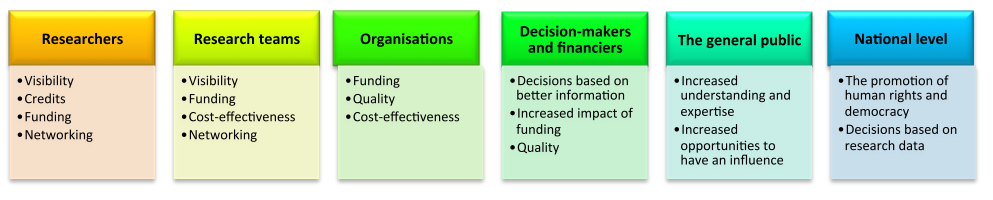

Results in the Context of Open Science
Introduction
In the previous lesson, you learned that the results of a research project encompass much more than just a published paper. In this lesson, we will demonstrate the benefits and challenges of making your research results open.
You will learn that making results open entails making them findable, accessible, interoperable, and reusable (FAIR) while caring for both people and purpose. To this end, we will discuss available guiding principles to enhance the usefulness of your research results for you as a researcher, for your research team, for your collaborators and for society in general. Applying these principles requires key changes in the practice and culture of research and the implementation and normalisation of certain technologies and practices that will be covered in the next two lessons as well.
Some research projects produce sensitive research objects that cannot be shared due to ethical, legal, technical or institutional reasons. We will discuss how your research project can be reproducible and collaborative without necessarily having them all open.
What are the advantages of making results open throughout the research process?
In the Ethos of Open Science module, we discussed the general benefits of Responsible Open Science [addlink-ethos]. In this section, we will link how these advantages pertain to each Research Object (RO) learned in Lesson 1 [addlink-results1]. In order to simplify the discussion we will merge the possible ROs in four big categories:
- Preparation documents. This category includes all outcome ROs from the research project planning phases, for example, ideation & conceptualization, planning and project design
- Datasets. This includes raw or processed datasets from the following research stages: data collection, data wrangling and processing, and preservation and reuse. Additional information about the advantages of making data open can be found in the Open Data module [addlink-data].
- Software. This refers to all the software created and used in all research stages, in particular: data collection, data wrangling and processing, data exploration & analysis and Preservation and reuse. Additional information about the advantages of making software open can be found in the Open Software module [addlink-software].
- Reports. This category includes all ROs associated with communicating results within the research group or/and outside, e.g Communication, reporting and publications
The main identified advantages of making results open are the following:
- Avoids duplicating efforts. This is important for all types of ROs.
For example, a single dataset can be analysed in multiple ways. Another example is that the same implementation of the data processing, exploration and analysis stages (including but not limited to analysis pipeline, statistical methods, tools, and software) can be reused for another phase of the same project or for a new project without the need of reimplementation by each researcher.
- Saves time and increases efficiency. This is important for all types of ROs.
If the research project is open from the start, it can help you to be more efficient and save a considerable amount of time (see the Ethos for Open Science module for “planning for open science” [addlink-ethos]). First, having the preparation documents open will guarantee that all members of the team have at hand the information about the project design and planning big picture. Second, you save time when you are required to share your dataset, methods and software with funders and publishers. Third, an open workflow creates efficient pipelines from the start. Fourth, open ROs from the Engagement, feedback and reporting stages can also significantly improve the review process by validating the results available at each research stage within or outside your team. This improves replicability, as independent researchers can replicate and confirm the results at each step. Good and open documentation of data, codes and scripts, protocols and intermediate results will speed up writing your final papers/publications.
- Facilitates collaboration and onboarding of new members. This is also important for all ROs.
Collaboration will be much easier when preparation documents, datasets, methods and software are open and well-documented. Having user testing, tutorials, executable notebooks and videos from the “Engagement, training, and feedback stage” will be additionally important for onboarding new members of your team or external collaborators. Your research project will be easier to be continued by you (even after some changes in the composition of your group) or by a different research group.
- Allows collaborators to receive credit, and provides incentives for others to contribute. This is important for all kinds of ROs.
Making your results open also opens you up to clearer ways of receiving credit and can also reduce the risk of scooping (each result can be individually referenced as soon as made available). Applying reproducibility practices separately on different parts of the project such as Preparation documents, datasets, software and reporting allows other researchers to test and reuse your work in their research, and your research will be more cited thus bringing fair recognition for your work. Collaborators can get more motivated to contribute because they can easily get recognition in terms of authorship for their contributions made for each one of the ROs generated.
- Furthers the reach and audience of our results. This is particularly related to the Communication and collaboration, reporting and publishing steps
Open posters/figures, talks/slides, preprints, webpages, and journal/book publications will allow more members of your academic community to access your research, which in turn can turn into more collaboration and recognition and a greater impact of your research results. But the impact can be extended outside the academic community as well by also making available public summaries, lab websites/blogs, social media, podcast/press releases, and citizen science projects among others which can strengthen the link with the local community and enrich your research.
- Funding. Since more and more funding agencies are paying attention to open science and requiring applying guiding open science principles to the research project they fund, open practices will make you eligible for more funding opportunities.
The picture below summarises the most significant advantages for all actors in the research ecosystem of making your results open.

(reference: @factorsoecd)
What are potential obstacles and what resources are available to help overcome them?
Overall Potential Obstacles
Along with all the clear benefits of open results, there is a suite of real and perceived challenges. These obstacles were described in the Ethos module [addlink-ethos] and can be divided into two categories:
- External obstacles: cultural barriers (lack of support and recognition from your institution), disagreement between collaborators involved in the research on what results to make open, legal and security considerations;
- Internal obstacles: investment of time and effort needed upfront to make your results open including the need to learn additional skills, afraid of scooping, the lack of funding for instance for open-access publications and curating research results.
These obstacles apply to any Research Objects (created by you or your collaborators), for example, data, software and documents, reports and publications.
Let’s focus on results that are not software or data. You can check the Data [addlink-data] and Software [addlink-software] modules for any questions specifically related to open data and software.
One of the major steps in research is the communication of your ideas and insights from your work into a clear, open, and accessible format that can help key stakeholders make meaningful decisions. Mastering different ways to convey your insights responsibly is challenging and can be seen as a diversion to your research work: blogging, writing public summaries, podcasting, presenting posters and talks at conferences outside of your discipline, and using social media requires communication skills that are not usually taught to students, and can be extremely time-consuming while the impact is very difficult to measure.
Obstacles and Recommendations for Open Access Reporting
The most common way to communicate research results is by far their publication in journals. However, the choice of a journal or a publishing platform may affect the availability and accessibility of the research results.
Open Access publications allow you to make available articles and/or books accessible online, free of charge to the public without any restriction (no mandatory registration or log in to specific platforms required). Publishing your results in Open access journal is a good way to increase your research impact and allows everyone, including society as a whole, to use your research results.
However, publishing open access can incur additional costs that may not be covered by your research grant or institution. Before publishing to a journal, check if there are institutional open access agreements in place: the costs are usually significantly reduced and sometimes you may be able to publish Open Access with no additional cost. Several publishers also offer waivers and discounts to researchers living in low- and middle-income countries. Other cost-offsetting programs may be available too: for instance, some publishers have a fee support program to ensure that accepted articles can benefit from open access.
In many disciplines, there are also Open Access Journals where the content is open for everyone, with no need to pay or be a member of a subscribing institution. The number of these journals is still increasing rapidly and you can search open access journals and articles in the Directory of Open Access Journals DOAJ.
You may choose to self-archive your research results to make them more discoverable and/or after you’ve published them in a subscription journal to ensure there is an open version of your paper. Preprint servers are also increasingly popular: you can deposit documents that have not been peer-reviewed in a traditional journal-led process but are considered a complete scientific publication in the first stage. Some of the preprint servers include open peer review services and the availability to post new versions of the initial paper once reviewed by peers. Preprints can be used to share a paper before it is submitted to a journal and can reduce scooping. Many publishers accept this as a standard practice but some may reject papers which have been shared in preprint form. It’s therefore important you read carefully the publisher’s policies when considering submitting a paper.
Finally, in most cases, you can also self-archive your publications in repositories, including Zenodo. It is however recommended to check if the journal has any specific self-archiving policy. Your institution may also have an institutional repository. Check the Registry of Open Access Repositories to search and find an up-to-date list of available repositories.
More information about open access for other research objects like data and software have been discussed in Open Data and Open Software modules respectively.
Obstacles with being open when reusing closed Research Objects by others
We have detailed the most common challenges you may face when making your results open. Additional challenges may arise if you reused closed Research Objects (ROs) but want to make your results open. Below are examples and possible solutions to overcome these challenges:
Potential obstacle 1
you do not get consent from some of your collaborators for opening some datasets you have used in your analysis.
Recommended solution: you can create and share metadata (description of the content, data format, link to sample data files) instead. However, your results may not be reproducible. Therefore when sharing your workflows and software, it would be useful to provide sample datasets to demonstrate the reusability of your work. We recommend you agree early on (at the planning stage) on what datasets you will be using and whether they are open or will be opened (embargo).
Potential obstacle 2
your research work involves the usage of sensitive datasets that cannot be shared when publishing.
Recommended solution: make sure to detail clearly the protocol used to collect the dataset and the condition of access. Ensure you have metadata to increase the FAIRness of your work. You may also want to provide sample datasets (for example, anonymized) to ease reuse and support the creation of derivative work.
Potential obstacle 3
The software you have used for your analysis is not open. This will of course limit the reproducibility of your results to those who can access the software you used.
Recommended solution: if it is commercial software, you can add metadata information such as the software name, version, and prerequisites (see software module [addlink-software]) to help others to identify and possibly buy the very same software. The more costly the software is, the less likely your research results will be reproduced and reused. When the software is closed and/or available at a cost, it is recommended to add sufficient information on the algorithm used to make it more accessible. If possible, provide containerized executable versions or offer an online service to run the software. Whenever you start a project, you should assess the tools you would need and evaluate the impact of using close or commercial software.
What are the guiding principles to turn a research result into an open result?
Following the FAIR principles (see Ethos module [addlink-ethos]) can help ensure research results are Findable, Accessible, Interoperable and Reusable. This is one of the prerequisites to making research results open and available to everyone. The CARE principles (Collective benefit, Authority to control, Responsibility and Ethics) are also detailed in the Ethos module and complement the FAIR principles: they are people and purpose-oriented and aim at advancing the Indigenous peoples’ rights and self-determination.
For Data and/or Software Research Objects, you can read the Data and Software Modules, respectively. Other types of Research Objects such as your planning and research results documents (for example, data management plan, project proposals, blogs, and videos) and publications need to follow the FAIR principles to allow others to understand your work and eventually derive new creative work.
Before learning how to ensure your research results are FAIR, let’s clarify the concept of FAIR and highlight the differences between FAIR and Open.
FAIR for Closed Research Objects
Ideally, Research Objects should be FAIR and Open. However, it is not always possible. For instance, whenever there is sensitive data or data that cannot be distributed (for example, it could harm or target specific people or identify the location of endangered species or animals), sufficient metadata can make the RO FAIR while keeping the data itself closed. Therefore, Research Objects can be FAIR but not open.
FAIR for Open Research Objects
Openness is a necessary but not sufficient condition for maximum reuse. When the content of Research Objects can be made open without harming anyone and with the consent of all the contributors, ensuring their FAIRness increases reproducibility and reuse.
Transforming an “unFAIR” to “FAIR” result
Here we will explore two scenarios:
- The Research Object is not yours
- The Research Object has been created by you and your research team.
Turning someone else Research Object into a FAIR result
- Check the license of the Research Object: if you cannot share the content, you can still create metadata.
- Add metadata (authors information, size of the Research Object, contact information, title, description, and location such as a persistent identifier or Digital Object Identifier) with detailed information about the Research Object itself. Readme tools such as https://readme.so/ can help guide building informative metadata [addlink-tools]
- Deposit the Research Object (if it can be re-distributed) in a repository where you can add metadata and get a persistent identifier such as Zenodo or a community-specific repository. If the Research Object itself cannot be redistributed, creating a record in a repository such as Zenodo where you can add as much metadata as necessary for others to understand and potentially request the Research Object itself.
Turning your Research Object into a FAIR result
- Check the colours of your figures and tables and change them to make them colourblind-friendly (see for instance https://www.color-blindness.com/coblis-color-blindness-simulator/).
- Check that making available your research results will not potentially harm anyone. In doubt, do not open the particular research result.
- Tidy your project structure to use descriptive file names and logical folder structure. See this resource for a good summary of what makes for good file names and folders: https://datamanagement.hms.harvard.edu/collect/file-naming-conventions
- Add a README file to your folders to explain what they contain. This tool can help easily build a readme: https://readme.so/
- Move data saved in proprietary formats to open standards (for instance, move files saved in DOCX format to RTF or HTML).
- Add code and code documentation, with descriptions of what each function does, and what their inputs and outputs are, and include examples. See open software for documentation standards [addlink-software].
- When publishing data, add an example of how to read and analyse the data.
- Upload reports in open archives.
- Choose Open-Access platforms that give free and online availability of research outputs.
- Publish a blog or a video abstract in simple language for the layperson.
- Link all the contents of your research outputs as an aggregated Research Object (for example, ensure data, code, and metadata can be found in the same archive).
- Add any other relevant metadata (add effective title/names, description and keywords) to each of your research outputs.
- Deposit the aggregated Research Object into a repository that can deliver persistent identifiers such as Digital Object Identifier.
The continuum from closed to open
All research results lie on a scale between closed and open because there are variances in how information is shared and the reasons to share. Your research results can be:
- Closed. It is only available to certain individuals within an organization. It is patented or proprietary.
- Mediated. It is semi-restricted to certain groups or it is open to the public through a licence fee or other pre-requisite. As we have discussed in previous sections, there are legitimate reasons to restrict access to data and when data is mediated possible users must request access. For example, health-related information collected by a hospital or insurance carrier
- Embargoed. The result will be open in the future. For example, some groups might release their data following an appropriate latency period to allow a thorough understanding of the data as well as to allow time for the scientific exploitation of the data by the research team.
- Open. It is accessible in a readable format and licensed as open source.
And there are many setups in between these four categories!
Aggregating your Research Objects
To work Open you may have created different Research Objects such as data, software and workflows. The Data and Software modules explained how to deal with these research results and obtained for instance Digital Object Identifiers for each of them. When publishing, additional material can be added (for example, software, data, workflows) but you usually limit the Research Objects to what is discussed in the paper. Failures, dead-ends and other trials and errors are part of the research process and usually do not have their place in scientific publication. To ease re-use and facilitate the creation of derivative work, you can aggregate all your research objects to create bundles that represent the entire research process and not only the selected positive results.
Assessment: Case study analysis
- Building on self-assessment #2 in Lesson 1. Which of those elements were guided by FAIR principles?
- Flag the research objects you think could benefit from FAIR principles.
- Rank order those objects from “would benefit most from FAIR principles” to least
- Rank order those objects from “would require most resources” to least
- Identify a few research objects that strike a balance between high priority and resources required